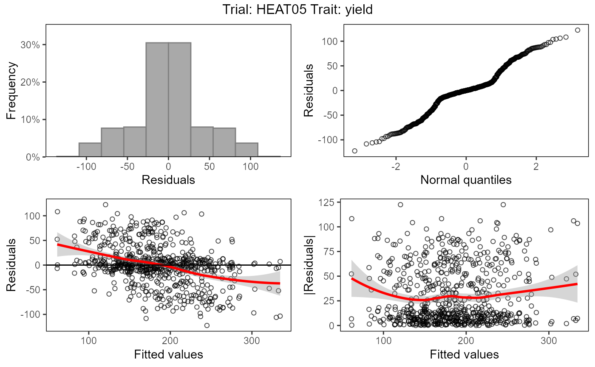
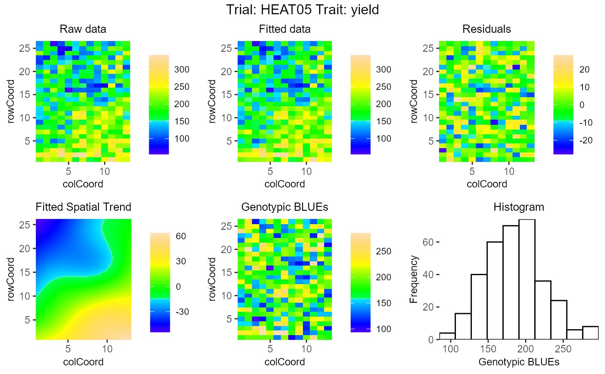
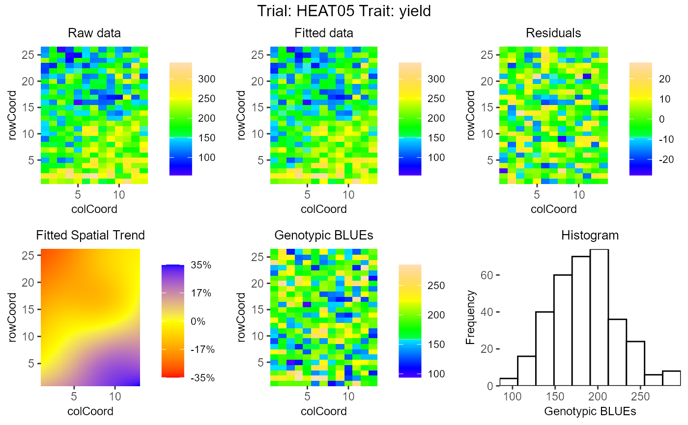

This function draws either four base plots:
A histogram of the residuals
A normal Q-Q plot
A residuals vs fitted values plot
An absolute residuals vs fitted values plot
or five or six spatial plots:
A spatial plot of the raw data
A spatial plot of the fitted data
A spatial plot of the residuals
A spatial plot of the estimated spatial trend (SpATS only)
A spatial plot of the BLUEs or BLUPs
A histogram of the BLUEs or BLUPs
Spatial plots can only be made if the data contains both row and column information.
# S3 method for STA plot( x, ..., trials = NULL, traits = NULL, what = NULL, plotType = c("base", "spatial"), spaTrend = c("raw", "percentage"), outCols = ifelse(plotType == "base", 2, 3), title = NULL, output = TRUE )
| x | An object of class STA. |
|---|---|
| ... | Further graphical parameters. |
| trials | A character vector indicating the trials to plot. If
|
| traits | A character vector indicating the traits to plot. If
|
| what | A character string indicating whether the fitted model with
genotype as fixed ( |
| plotType | A character string indicating whether |
| spaTrend | A character string indicating how the spatial trend should be displayed. Either "raw" (original scale), or "percentage". If "percentage", the estimated spatial trend is scaled (i.e., divided by the average of the observed response variable of interest across the field) and results are shown as a percentage. |
| outCols | An integer indicating the number of columns to use for displaying the plots. Usually the default of 2 for base plots and 3 for spatial plots will be fine, but decreasing the numbers may help for nicer printing. |
| title | A character string used a title for the plot. Note that when a title is specified and multiple plots are created, all plots will get the same title. |
| output | Should the plot be output to the current device? If
|
A list containing ggplot objects for the selected plots.
Other functions for STA objects:
STAtoCross(),
STAtoTD(),
report.STA(),
summary.STA()
## Run a single trait analysis using SpATS. myModel <- fitTD(TD = TDHeat05, design = "res.rowcol", traits = "yield")#>## Create spatial plots showing the spatial trend as percentage. plot(myModel, what = "fixed", plotType = "spatial", spaTrend = "percentage")